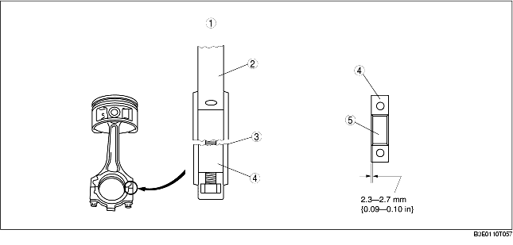

• The connecting rod is made of structural sintered alloy to improve rigidity.
• The connecting rod, the piston, and the piston pin are shrinkage fit, so that they cannot be disassembled.
• The connecting rod bolts are plastic region tightening bolts to be tightened in two steps to insure tightening stability.
• There is no positioning tab for the connecting rod bearing. When installing the bearing, measure the position of the bearing so that the position reaches the center of the connecting rod and the bearing cap, and install it.
• The large end of the connecting rod and the connecting rod cap were originally formed as a single unit and then it was cut into the connecting rod and the cap. The form of the cutting surface is used as the alignment mark for the connecting rod and cap.

.
• The upper lower bearing of the connecting rod bearing is made of aluminum alloy.
• There are three kinds of connecting rod bearings depending on the oil clearance.
|
Bearing size
|
Bearing thickness (mm {in})
|
|---|---|
|
Standard
|
1.498-1.504 {0.0590-0.0592}
|
|
0.50 {0.02} Oversize
|
1.748-1.754 {0.0688-0.0690}
|
|
0.25 {0.01} Oversize
|
1.623-1.629 {0.0639-0.0641}
|